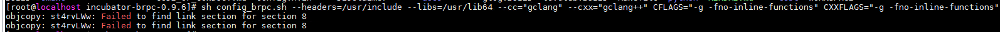
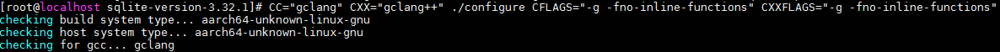
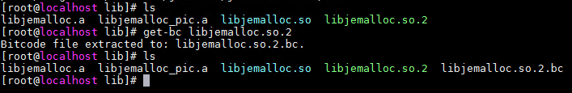
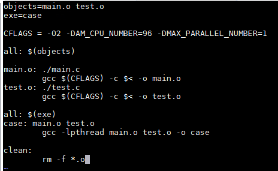

内存一致性检查就是检查源码迁移在鲲鹏平台运行时可能存在的内存一致性问题，并提供插入内存屏障的建议。

- 任务运行过程中会执行上传源码包中构建文件的构建命令，请确保上传内容的安全性和完整性，避免影响服务器正常运行。
- 由于运行内存一致性检查时，生成的中间文件较大，如果用户想要使用该功能，请确保安装工具的所在磁盘空间足够大，根据经验数据，每10w行代码需要100G左右的磁盘空间。
- 分析中间文件消耗内存较大，请确保可用内存或交换空间足够大，根据经验数据，中间文件每1M需要大概6G的内存占用。
- 源码规模过大可能会导致占用资源过多，建议代码量不超过10万行。
- 检查失败或检查结果为无需修改时，会产生空白报告。
前提条件
“/opt/portadv”为工具默认安装目录，下文以此默认路径为例，请根据实际情况替换。
操作步骤
- 在左边标题栏中，选择“增强功能”。
检查类型选择“内存一致性”，如图1所示。
- 选择“检查模式”。
- 静态检查，请继续执行3。
- 编译器自动修复，需要用户根据页面提供的操作步骤进行操作，详细请参见编译器自动修复工具使用指导。
静态检查的结果误报少、修复率最高为60%，编译器自动修复结果不会漏报，误报率比静态检查高，修复率可保证100%。误报越多，性能影响相对越大。不同软件下编译的修复率不同，性能影响也不同。
- 选择“文件上传类型”。
- 填写“源码文件存放路径”。可以通过以下两种方式实现：
- 单击“上传”按钮上传压缩包（上传过程中自动解压）或者文件夹。
- 支持上传tar，tar.bz，tar.bz2，tar.gz，tar.xz，tbz，tbz2，tgz，txz，zip格式的压缩包，只允许同时上传一个压缩包。源码文件压缩包小于或等于1GB，解压后小于或等于剩余磁盘空间的一半。
- 只允许同时上传一个文件夹，文件夹小于或等于剩余磁盘空间的一半。
- IE浏览器不兼容文件夹上传功能，上传文件夹需要使用其他浏览器，如Google Chrome，Microsoft Edge。
- 先将源码文件手动上传到服务器上本工具的指定路径下（例如：/opt/portadv/portadmin/weakconsistency/），给porting用户开读写和执行权限，再单击填写框选择下拉框中的源码路径即可，也可以手动填写源码路径名称。
- 单击“上传”按钮上传压缩包（上传过程中自动解压）或者文件夹。
- 填写编译命令，然后单击“下一步”。
解析编译命令后生成BC文件。
- 选择生成的BC文件后单击“确认检查”，开始内存一致性检查。图2 选择BC文件

检查完成后，单击“查看报告”可进入“检查报告”界面，如图3所示。
- 可点击
 对需要修改的源码文件按照路径或修改点数量进行排序。
对需要修改的源码文件按照路径或修改点数量进行排序。 - 如果选择了“生成编译器工具配置文件”，可点击“下载编译器配置文件”，下载编译器工具配置文件。也可将鼠标悬停在“历史报告”区域中对应报告的
 上，然后选择“下载编译器配置文件”。
上，然后选择“下载编译器配置文件”。 - 如果下载编译器工具配置文件时系统提示“该编译器配置文件不是最新的”，点击“前往查看”到最新报告中下载。如果系统再提示“最新报告中没有编译器配置文件”，请按照提示操作。
- 可点击
- 单击操作列表中的“查看建议源码”进入源码修改建议页面，如图4所示。

若用户需要在原始代码中进行修改操作，务必随时对编辑的源码进行保存,否则可能会因为会话超时而丢失修改的代码。
- 用户可以将鼠标置于有红色波浪线的代码上，在悬浮的提示中单击Quick Fix自动添加右侧的源码建议（可选择“在本文件中应用该类修改”对同类问题进行批量修改）。用户可以直接在原始源代码中进行修改，修改完之后，可单击右上角的保存，回退或取消。
- quick fix后可能出现源码无法编译的情况，目前遇到场景可以参考FAQ内存一致性检查quick fix后源码编译失败。
- 选中左侧的文件，单击下载按钮可下载用户所需要的源码文件。
- 用户可以单击原始源代码模块右上角的上下键，进行上下切换。
- 支持多个用户同时创建内存一致性检查任务。
- 用户可在任务进行过程中单击关闭，取消任务。
- 填写“BC文件存放路径”。可以通过以下两种方式实现：
- 单击“上传”按钮上传BC文件。
- 先将BC文件手动上传到服务器上本工具的指定路径下（例如：/opt/portadv/portadmin/weakconsistency_bc/），再单击填写框选择下拉框中的BC文件即可，也可以手动填写BC文件名称。
- 单击“确认检查”，开始内存一致性检查。
BC文件检查报告中会显示建议修改点数量和建议修改代码的具体位置，可根据这些信息进行排查和修改。
编译器自动修复工具使用指导
工具支持的操作系统和GCC版本：
操作系统 |
GCC版本 |
|---|---|
BC-Linux 7.6/7.7 |
GCC 4.8.5/4.9.3/5.1.0/5.2.0/5.3.0/5.4.0/5.5.0/6.1.0/6.2.0/6.3.0/6.4.0/6.5.0/7.1.0/7.2.0/7.3.0/7.4.0/8.1.0/8.2.0/8.3.0/9.1.0/9.2.0/9.3.0 |
CentOS 7.4/7.5/7.6/7.7 |
GCC 4.8.5/4.9.3/5.1.0/5.2.0/5.3.0/5.4.0/5.5.0/6.1.0/6.2.0/6.3.0/6.4.0/6.5.0/7.1.0/7.2.0/7.3.0/7.4.0/8.1.0/8.2.0/8.3.0/9.1.0/9.2.0/9.3.0 |
CentOS 8.0 |
GCC 8.2.0/8.3.0/9.1.0/9.2.0/9.3.0 |
CentOS 8.1/8.2 |
GCC 8.3.0/9.1.0/9.2.0/9.3.0 |
Debian 10 |
GCC 8.3.0/9.1.0/9.2.0/9.3.0 |
Deepin 15.2 |
GCC 6.3.0/6.4.0/6.5.0/7.1.0/7.2.0/7.3.0/7.4.0/8.1.0/8.2.0/8.3.0/9.1.0/9.2.0/9.3.0 |
iSoft 5.1 |
GCC 7.3.0/7.4.0/8.1.0/8.2.0/8.3.0/9.1.0/9.2.0/9.3.0 |
Kylin V10 SP1 |
GCC 7.3.0/7.4.0/8.1.0/8.2.0/8.3.0/9.1.0/9.2.0/9.3.0 |
LinxOS 6.0.90 |
GCC 6.3.0/6.4.0/6.5.0/7.1.0/7.2.0/7.3.0/7.4.0/8.1.0/8.2.0/8.3.0/9.1.0/9.2.0/9.3.0 |
NeoKylin V7U6 |
GCC 4.8.5/4.9.3/5.1.0/5.2.0/5.3.0/5.4.0/5.5.0/6.1.0/6.2.0/6.3.0/6.4.0/6.5.0/7.1.0/7.2.0/7.3.0/7.4.0/8.1.0/8.2.0/8.3.0/9.1.0/9.2.0/9.3.0 |
openEuler 20.03 |
GCC 7.3.0/7.4.0/8.1.0/8.2.0/8.3.0/9.1.0/9.2.0/9.3.0 |
openEuler 20.03 LTS SP1 |
GCC 7.3.0/7.4.0/8.1.0/8.2.0/8.3.0/9.1.0/9.2.0/9.3.0 |
openEuler 20.03 LTS SP2 |
GCC 7.3.0/7.4.0/8.1.0/8.2.0/8.3.0/9.1.0/9.2.0/9.3.0 |
SUSE SLES15.1 |
GCC 7.4.0/8.1.0/8.2.0/8.3.0/9.1.0/9.2.0/9.3.0 |
Ubuntu 18.04.x |
GCC 7.3.0/7.4.0/8.1.0/8.2.0/8.3.0/9.1.0/9.2.0/9.3.0 |
Ubuntu 20.04.x |
GCC 9.3.0 |
UOS 20 SP1 |
GCC 8.3.0/9.1.0/9.2.0/9.3.0 |
uosEuler 20 |
GCC 7.3.0/7.4.0/8.1.0/8.2.0/8.3.0/9.1.0/9.2.0/9.3.0 |
- 以上列表以操作系统默认支持的GCC版本为准，如果服务器操作系统升级过GCC版本，可能存在兼容性问题。
- 以上支持的GCC版本都是指GNU官方的GCC分支，不推荐用户基于GCC for openEuler来使用此编译器自动修复工具。
使用该功能需要配置对应的环境，可以通过以下步骤进行：
- 下载相关软件包。
- GCC源码： https://gcc.gnu.org/（请从GCC官网下载对应版本的源码。）
- GCC修复工具patch：https://github.com/kunpengcompute/devkitdriver/tree/main/gccchecker（Debian系列和RHEL系列操作系统都使用此包。）
- 内存一致性修复组件：从Porting安装路径下，找到/tools/weakconsistency/gccchecker/gcctool.tar.gz。
- 安装内存一致性修复组件。
- 解压安装包。
1
tar xf gcctool.tar.gz
解压后确认“gcctool/bin”目录下有以下文件：
gcctool，gcctool-bin，libstdc++.so.6
- 解压安装包。
- 合入GCC patch。
如果提示“‘patch’command not found”，则请先安装：
Debian系列：
1
apt install patch
RHEL系列：
1
yum install patch
1 2
cd /gcc/source/root/dir patch -p1 < /path/to/gcc/patch/file - 编译GCC。
GCC源码编译操作请参考GCC官方文档，合入的patch对GCC编译依赖组件和编译过程没有影响，任何GCC编译问题可以询问GNU社区。
准备好环境之后再执行以下步骤使用工具：
- 设置内存一致性修复组件优化等级。
1
export HW_DEBUG=[ 0 | 1 | 2 ]
编译组件支持通过环境变量配置修复优化等级，不设置环境变量，修复工具不会生效。
- 0表示不使用优化策略，性能损失最大。
- 1表示使用最安全的修复策略，性能损失较大。
- 2表示应用组件优化规则，可以减少性能损失。
- （可选）定义自动修复源码范围。
- 工具允许用户自定义源码修复范围，以文件或函数为单位。配置允许列表后，修复组件只对列表内的内容进行修复。允许列表的格式如下：
- 文件列表以“files:”开头，每个文件独占一行。
- 文件使用绝对路径。
- 支持C/C++/Fortran格式的文件，不支持纯汇编文件。
- 函数列表以“functions:”开头，每个函数独占一行。
- 支持C/C++普通函数，不支持模板或具有abi_tag属性的函数。
以下为允许列表的格式示例：
1 2 3 4 5 6 7 8 9 10 11 12 13
files: /path/to/file/a /path/to/./file/b /path/to/../file/c /path/to/file/d functions: func_a func_b() func_c(int xxx) int func_d() classA::func_e ns::classB::func_f() std::string nsA::nsB::classC::func_g(int xxx)
- 修复组件获取允许列表路径。
“export AUTOFIXLIST=/path/to/allowlist”
- 工具允许用户自定义源码修复范围，以文件或函数为单位。配置允许列表后，修复组件只对列表内的内容进行修复。允许列表的格式如下：
- 编译软件。
用户可以编译软件，编译过程没有变化。（原本编译过程如果使用了-pipe编译选项，需要移除，不会影响原编译结果。）
生成BC文件
BC（BitCode）文件：使用LLVM编译源代码生成中间文件（IR），BC文件是IR的二进制表示。
BC文件生成方式有以下两种：
- 方法一：首选。借助第三方工具gllvm生成BC文件。
- gllvm工具使用go编译，并依赖clang编译器，使用详情请参考：https://github.com/SRI-CSL/gllvm/blob/master/README.md，推荐使用1.2.9版本。
- 使用gllvm工具构建时，需指定编译器类型为gclang和gclang+，增加编译选项“-g -fno-inline-functions”。
使用样例：
请确保系统当前环境满足待测试程序的构建条件。
- 将clang编译器和编译后gllvm工具设置到环境变量中：
1 2
export PATH=/opt/portadv/tools/weakconsistency/staticcodeanalyzer/llvm-tools/bin:/path/to/gllvm/bin:$PATH export LD_LIBRARY_PATH=/home/porting/lib:$LD_LIBRARY_PATH
- 设置gllvm对clang的依赖：
1 2 3
export LLVM_CC_NAME="clang" export LLVM_CXX_NAME="clang++" export LLVM_LINK_NAME="llvm-link"
- 优化等级：将待测试工程的所有优化等级都修改为“-O0”。
- 构建：将C编译器指定为gclang，C++编译器修改为gclang++，同时增加编译选项“-g -fno-inline-functions”，此操作不唯一，与待测试工程的构建工具和参数相关；其他构建步骤不变；可参考以下构建用例：
- 对于使用脚本构建，但未指定输入参数的工程，以jemalloc为例，可使用如下命令指定编译器类型：图6 jemalloc

- 对于使用脚本构建，但指定输入参数的工程，以incubator-brpc为例，可根据incubator-brpc的参数要求，使用如下命令指定编译器类型：图7 incubator-brpc
 - 对于使用configure构建的工程，以sqlite为例，可使用如下命令指定编译器类型：图8 sqlite
 - 对于在配置文件中指定了编译器类型的工程，需修改配置文件，以bwa为例，使用make构建工具，需将Makefile第一行CC指定为glang后再执行构建命令图9 修改makefile文件
 图10 bwa
图10 bwa
- 生成BC文件：构建完成后，生成动态库(.so)文件或者可执行文件，使用gllvm的get-bc工具生成BC文件。以jemalloc为例：图11 jemalloc

- 对于使用脚本构建，但未指定输入参数的工程，以jemalloc为例，可使用如下命令指定编译器类型：
- 方法二：使用工程构建工具生成BC文件，如make，cmake等。如果软件使用该方法，需修改相关的配置文件，如makefile。
- 替换编译命令：使用clang替换gcc等，使用llvm-link替换ld等。
- 调整编译选项：修改优化等级“-O0”，增加“-flto -g -fno-inline-functions”。
上述操作完成后，通过构建获得BC文件。
使用样例：
- 在构建项目之前，需将gcc编译器替换成llvm相关的工具。
- 构建时务必替换或增加指定的编译选项，防止部分指令信息缺失，从而影响分析结果准确性。
- 将最终生成的目标文件修改为BC文件。
- 使用make工具完成项目构建。图12 构建

- 修改编译命令并替换编译选项。以下是原始的makefile文件和修改后的makefile文件：图13 原始的makefile文件
图14 修改后的makefile文件
修改后的makefile文件，将编译工具修改为clang，链接生成目标文件的工具改为llvm-link。
- 完成项目构建。图15 构建完成

- 若分析结果不准确，可能是BC文件异常造成的。
- 生成的BC文件异常，可能是由于编译过程中涉及gfortran等编译器。
- 可通过以下方式验证BC文件是否异常：使用llvm的llc和本地的gcc将文件转为可执行程序，并验证该程序功能是否正常。